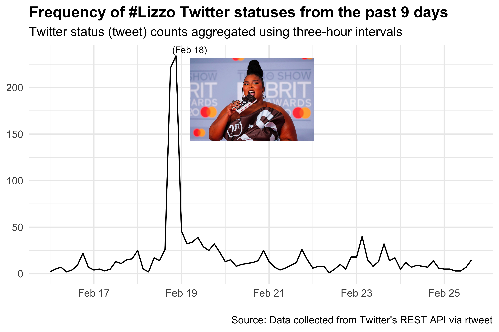

Lizzo has had a meteoric rise of success with her album Cuz I Love you. I remember hearing “Truth Hurts” and being immediately hooked last summer when I served as a SROP mentor for undergraduate research students on campus. I decided to create an interesting blog post to analyze tweets with the #lizzo hashtag, do sentiment analysis on Cuz I Love you and even generate Lizzo lyrics by making our own Markov chain generator!
library(kableExtra)
library(tidyverse)
library(tidytext)
library(genius)
library(rtweet)We can use the rtweet package by Michael Kearney to access Twitter’s API to query tweets.
Ltweet <- search_tweets(
"#lizzo", n = 10000, include_rts = FALSE
)
LtweetLtweet %>%
ts_plot("3 hours") +
theme_minimal() +
theme(plot.title = element_text(face = "bold")) +
labs(
x = NULL, y = NULL,
title = "Frequency of #Lizzo Twitter statuses from the past 9 days",
subtitle = "Twitter status (tweet) counts aggregated using three-hour intervals",
caption = "\nSource: Data collected from Twitter's REST API via rtweet") +
cowplot::draw_image("featured.jpg", scale = 0.3)
We can see that there is a peak on February 18th, 2020 which corresponds to the 2020 BRIT awards. Let’s see if we can use cowplot package from Claus Wilke to add a picture of Lizzo at the BRIT awards.
library(cowplot)
ggdraw() +
draw_plot(Lizzo_plot) +
draw_image("featured.jpg", hjust = -0.005, vjust = -0.2, scale = .25) +
draw_text("(Feb 18)", x = 0.38, y = 0.85, size = 8)
We can use the genius package to query music lyrics in R. We use the command genius_lyrics() and to anlayze the lyrics from a song and artist. For this example we can get the lyrics for “Mr. Brightside” by The Killers. Next we can use Julia Silge and David Robinson’s tidytext package to unnest tokens and obtain 2-word “ngrams”. We will use this later on to make our Markov chain generator.

genius_lyrics("the killers", "mr. brightside") %>%
unnest_tokens(bigram, lyric, token = "ngrams", n = 2) %>%
count(bigram) %>%
arrange(desc(n)) %>%
head(10) %>%
kable() | bigram | n |
|---|---|
| a kiss | 6 |
| and she’s | 4 |
| i never | 4 |
| it was | 4 |
| only a | 4 |
| was only | 4 |
| a cab | 2 |
| a drag | 2 |
| a smoke | 2 |
| all in | 2 |
Next we can use the sentiment lexicon from Bing Liu et al which is included in the tidytext package. We will use this to ‘inner_join’ with our lyric collection.
bing <- get_sentiments("bing")
bing %>%
head(10) %>%
kable()| word | sentiment |
|---|---|
| 2-faces | negative |
| abnormal | negative |
| abolish | negative |
| abominable | negative |
| abominably | negative |
| abominate | negative |
| abomination | negative |
| abort | negative |
| aborted | negative |
| aborts | negative |
Now that we learned how more about the genius package we can use the ’genius_album()` command to get the lyrics from Cuz I Love You.
Lizzo <- genius_album(artist = "Lizzo", album = "Cuz I Love You")
Lizzo %>%
head(10) %>%
kable()| track_title | track_n | line | lyric |
|---|---|---|---|
| Cuz I Love You | 1 | 1 | I’m cryin’ ’cause I love you, oh |
| Cuz I Love You | 1 | 2 | (Ya ya ya, ya ya, ya ya) |
| Cuz I Love You | 1 | 3 | Never been in love before |
| Cuz I Love You | 1 | 4 | What the fuck are fucking feelings, yo? |
| Cuz I Love You | 1 | 5 | Once upon a time, I was a ho |
| Cuz I Love You | 1 | 6 | I don’t even wanna ho no mo’ |
| Cuz I Love You | 1 | 7 | Got you something from the liquor store |
| Cuz I Love You | 1 | 8 | Little bit of Lizzo and some Mo |
| Cuz I Love You | 1 | 9 | Tryna open up a little mo’ |
| Cuz I Love You | 1 | 10 | Sorry if my heart a little slow |
Now we can get the 2-word “ngrams”.
Lizzo %>%
unnest_tokens(bigram, lyric, token = "ngrams", n = 2) %>%
count(bigram) %>%
arrange(desc(n)) %>%
head(10) %>%
kable()| bigram | n |
|---|---|
| ya ya | 38 |
| like a | 36 |
| a girl | 33 |
| yeah yeah | 31 |
| blame it | 29 |
| ya ee | 28 |
| the one | 24 |
| it on | 23 |
| love love | 23 |
| on my | 23 |
Next we can take the Lizzo lyrics and get rid of stop words by using an anti_join() and inner_join() with the bing sentiment dataframe and add up the top 10 ngrams and visualize it.
Lizzo %>%
unnest_tokens(word, lyric) %>%
anti_join(stop_words) %>%
inner_join(bing) %>%
count(word, sentiment, sort = TRUE) %>%
group_by(sentiment) %>%
top_n(10) %>%
ungroup() %>%
mutate(word = str_replace_all(word, "fuck", "f*ck"),
word = str_replace_all(word, "bitch", "b*tch"),
word = reorder(word, n),
word = fct_lump(word, n = 10)) %>%
ggplot(aes(word, n, fill = sentiment)) +
geom_col(show.legend = FALSE) +
facet_wrap(~sentiment, scales = "free_y") +
labs(y = "Cuz I Love You: Words that contribute the most to positive and negative sentiment",
x = NULL) +
coord_flip() +
theme_minimal() It seems like there’s plenty of “love” and positive word sentiment in this album!
It seems like there’s plenty of “love” and positive word sentiment in this album!

We can use the python markovify package and use the reticulate to use python in our R session.
# library(reticulate)
# use_python("/usr/local/bin/python")
# py_install("markovify")Alex Bresler has ported markovify to an R packaged named Markovifyr.
# devtools::install_github("abresler/markovifyR")
library(markovifyR)First get the a corpus of lyrics only.
Lizzo_corpus <- Lizzo %>%
pull(lyric)
Lizzo_corpus %>%
head(10) ## [1] "I'm cryin' 'cause I love you, oh"
## [2] "(Ya ya ya, ya ya, ya ya)"
## [3] "Never been in love before"
## [4] "What the fuck are fucking feelings, yo?"
## [5] "Once upon a time, I was a ho"
## [6] "I don't even wanna ho no mo'"
## [7] "Got you something from the liquor store"
## [8] "Little bit of Lizzo and some Mo"
## [9] "Tryna open up a little mo'"
## [10] "Sorry if my heart a little slow"Now we can create a Markov model with our corpus and specify the overlap.
Lizzo_markov_model <-
generate_markovify_model(
input_text = Lizzo_corpus,
markov_state_size = 2L,
max_overlap_total = 25,
max_overlap_ratio = .85
)markovify_text(
markov_model = Lizzo_markov_model,
maximum_sentence_length = NULL,
output_column_name = 'textLizzoBot',
count = 25,
tries = 100,
only_distinct = TRUE,
return_message = TRUE) %>%
kable()## textLizzoBot: Mirror, mirror on the Goose
## textLizzoBot: Fuck it up to the dance floor
## textLizzoBot: Will you be my lover
## textLizzoBot: Oh, if I try to tell you, then you real like a girl, then you real like a girl
## textLizzoBot: Oh, I get an amen?
## textLizzoBot: And I don't need to cry
## textLizzoBot: Trust, baby, you can't make me crescendo, I'm going up
## textLizzoBot: I'm cryin', I'm cryin', hey
## textLizzoBot: I don't need to cry
## textLizzoBot: If I try to hurt me
## textLizzoBot: Fly you out of my life
## textLizzoBot: I'm about to add a little lost sometimes
## textLizzoBot: Lit up like a girl, then you real like a girl, cry like a girl, cry like a girl
## textLizzoBot: Wanna put you on a mink fur?
## textLizzoBot: You and you and you and you and you and you and you and
## textLizzoBot: The fact is I'm leaving, so just let me feel you close
## textLizzoBot: Smile if I try to change, hey
## textLizzoBot: Louis down to my juicy parts
## textLizzoBot: Shit, fuck, I didn't care
## textLizzoBot: So if you fight like a crystal ball
## textLizzoBot: And she never tell me to say?
## textLizzoBot: That's exactly how I roll
## textLizzoBot: Oh no, don't you get a little slow| idRow | textLizzoBot |
|---|---|
| 1 | Mirror, mirror on the Goose |
| 2 | Fuck it up to the dance floor |
| 3 | Will you be my lover |
| 4 | Oh, if I try to tell you, then you real like a girl, then you real like a girl |
| 5 | Oh, I get an amen? |
| 6 | And I don’t need to cry |
| 7 | Trust, baby, you can’t make me crescendo, I’m going up |
| 8 | I’m cryin’, I’m cryin’, hey |
| 9 | I don’t need to cry |
| 10 | If I try to hurt me |
| 11 | Fly you out of my life |
| 12 | I’m about to add a little lost sometimes |
| 13 | Lit up like a girl, then you real like a girl, cry like a girl, cry like a girl |
| 14 | Wanna put you on a mink fur? |
| 15 | You and you and you and you and you and you and you and |
| 16 | The fact is I’m leaving, so just let me feel you close |
| 17 | Smile if I try to change, hey |
| 18 | Louis down to my juicy parts |
| 19 | Shit, fuck, I didn’t care |
| 20 | So if you fight like a crystal ball |
| 21 | And she never tell me to say? |
| 22 | That’s exactly how I roll |
| 23 | Oh no, don’t you get a little slow |
Now we can make a meme using the lyrics generated from our Lizzobot Markov chain generator.
library(magick)
Lizzo_meme <- image_read('https://upload.wikimedia.org/wikipedia/commons/0/0f/Lizzo_-_Palace_Theatre_-_St._Paul_%2827266085317%29.jpg') %>%
image_scale("800") %>%
image_annotate("FLY YOU OUT OF MY LIFE", font = "Helvetica",
size = 65, location = "+5+350", color = "white" )
print(Lizzo_meme)